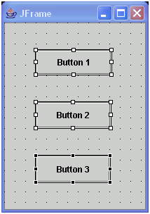

This document is specific to the X/Y functions. The GridBag functions of
the alignment dialog are covered in the GridBag help document. To help lay
out and distribute components, you can use the actions from the alignment
window. This is opened and closed with the toolbar action.
The alignment window has a
number of actions that work on a group of components. For example, the align
left action will set the left edge of all of the selected components to be
the same. The last selected component is used as the anchor control for the
other selected components. So, in this example the left edges of other selected
components will align with the last selected component. The anchor component
is the one drawn with black resize handles while the other selected components
are drawn with white resize handles.
Since the alignment actions change the size and location of components, they only apply when the layout is set to 'null'. The alignment actions are enabled if:
- There are two or more components selected and the parent containers have no layout manager.
- The components have no parent and have been placed on the Design view directly.
In addition to aligning components based on their edges, center points,
and matching widths, you can distribute components. When components are distributed,
their positions are changed so that they are evenly spaced within a bounding
box defined by their parent container. For example, the distribute vertical button
 will
arrange the following controls so that they have the same spacing:
will
arrange the following controls so that they have the same spacing:

After
distribute vertically, it becomes:

Notice
the three buttons are distributed within the height of the parent (the frame's
top and bottom edge).
To allow for more control over the area used to divide up the space between
the controls, you can enable the distribute box with the alignment window
button  .
This will show a box drawn around the area of all the selected components,
whcih can be moved and resized using its handles. When a 'distribute' occurs
and the box is active, the area that is divided up to reposition the controls
will be the distribute box, rather than the parent container.
.
This will show a box drawn around the area of all the selected components,
whcih can be moved and resized using its handles. When a 'distribute' occurs
and the box is active, the area that is divided up to reposition the controls
will be the distribute box, rather than the parent container.

The box can be moved and resized 
and vertical distribute
is now within this box.